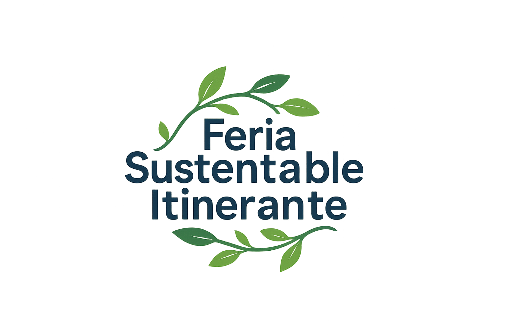

Sobre el Proyecto
Este proyecto se centra en una organización dedicada a la promoción de prácticas sostenibles en comunidades urbanas. Nuestro objetivo es crear un sitio web atractivo que informe, inspire y motive a los visitantes a adoptar hábitos responsables con el medio ambiente.
- Actividad principal: Difusión y educación en prácticas sustentables.
- Objetivos del sitio: Informar, atraer voluntarios, promocionar eventos.
- Concepto: Estilo limpio, accesible y amigable, con un enfoque visual fresco.
- Público objetivo: Jóvenes de 18-35 años, interesados en sostenibilidad, tecnología y participación comunitaria.
Identidad Visual
La identidad se basa en una paleta de colores suaves, tipografía moderna y uso de íconos lineales. Aquí mostramos un ejemplo preliminar:
Paleta de colores
Tipografía
Space Grotesk, sans-serif
Logo preliminar
Mapa del Sitio

Prototipo
Consulta nuestros wireframes preliminares y accede al prototipo interactivo:
Ver PrototipoOrganización del Equipo
- Nombre: Diseñador UX/UI — Diseño visual y experiencia de usuario.
- Nombre: Maquetadora — Armado de la estructura HTML y CSS.
- Nombre: Programador — Funcionalidades dinámicas y optimización.
- Nombre: Comunicadora Web — Redacción de contenidos y redes sociales.